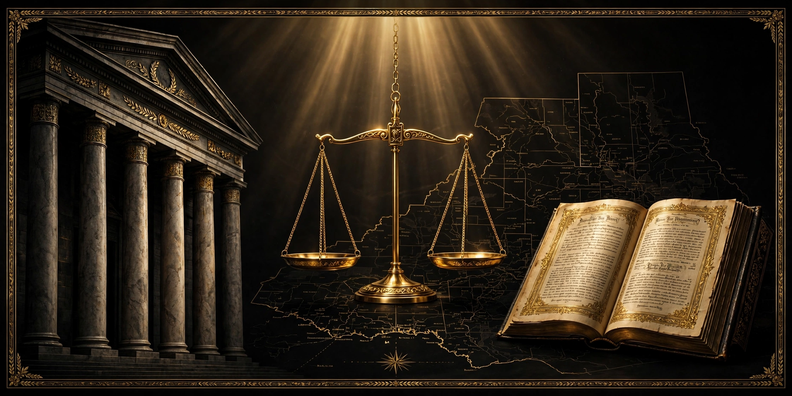

Where Does Police Power Come From?
The history of the police power — where it came from, and where the courts themselves say it stops.

WILKES-BARRE, PA. — On November 9, 2026, Yusef El went live on the SPC University YouTube channel under the title "# POLICE POWERS: The Legal Basis for Government Regulation," its thumbnail asking in larger type: "WHAT ARE THEY AND DO THEY TRUMP PRIVATE RIGHTS?" The question deserves a straighter answer than a comment section can give — so this release asks the older question underneath it: where does police power come from?
First, a clearing of the ground. In constitutional law, "police power" does not mainly mean the powers of a police officer — the stop, the search, the arrest. It names the authority of a state to make laws for the health, safety, morals, and general welfare of its people: licensing, zoning, building codes, quarantine, the rules of the road.
The surprising fact is that the words "police power" appear nowhere in the United States Constitution. The power was never granted in so many words because, in the founding design, it never left the states: federal powers were listed and limited, and everything not delegated stayed where it was. The Tenth Amendment records the reservation in one sentence; the police power is its largest part.
Its roots run back through English common law. Blackstone, writing his Commentaries in the 1760s, described the "public police" as the due regulation and domestic order of the kingdom, binding the inhabitants, like members of a well-governed family, to conform their behavior to the rules of propriety and good neighborhood. Underneath it sat an old maxim: sic utere tuo ut alienum non laedas — use your own so as not to injure another's.
Chief Justice Lemuel Shaw of Massachusetts gave the doctrine its classic shape in Commonwealth v. Alger (1851) — "the power vested in the legislature to make, ordain, and establish all manner of wholesome and reasonable laws, statutes, and ordinances, either with penalties or without, not repugnant to the constitution, as they shall judge to be for the good and welfare of the commonwealth, and of the subjects of the same." The limit is written into the grant itself.
The Supreme Court then tested the reach. In Barbier v. Connolly (1885), the Court upheld a San Francisco laundry ordinance, holding the Fourteenth Amendment was not designed to interfere with the police power — except where a provision was enacted with an "evident purpose" to discriminate against a class. In Mugler v. Kansas (1887), the Court upheld Kansas prohibition — and warned that a statute purporting to protect public health, morals, or safety that "has no real or substantial relation" to those objects, or is "a palpable invasion of rights secured by the fundamental law," must be struck down. In Jacobson v. Massachusetts (1905), the Court upheld a smallpox vaccination mandate — and still barred any exercise of the power in an "arbitrary, unreasonable manner," or beyond what public safety reasonably requires.
Now the definition itself, from the source this Journal quotes exactly — Madison's own Black's Law Dictionary, 4th Edition Revised, entry POLICE POWER, printed page 1317:
POLICE POWER. The power vested in a state to establish laws and ordinances for the regulation and enforcement of its police as above defined. The power vested in the legislature to make, ordain, and establish all manner of wholesome and reasonable laws, statutes, and ordinances, either with penalties or without, not repugnant to the constitution, as they shall judge to be for the good and welfare of the commonwealth, and of the subjects of the same. Com. v. Alger, 7 Cush. (Mass.) 85.
The entry goes further, and the last part matters most for the livestream's question. Quoting Munn v. Illinois, Black's records that this power, which sounds like "an undefined and irresponsible element in government, can only interfere with the conduct of individuals in their intercourse with each other, and in the use of their property, so far as may be required to secure these objects."
So — do police powers trump private rights? The honest, sourced answer is no, and it comes from the doctrine's own builders. The power is real and broad; courts have called it one of the most essential powers of government, and the least limitable. But every authority that built it built the boundary into it: laws must be wholesome and reasonable, not repugnant to the constitution, genuinely tied to health, safety, morals, or welfare, never arbitrary or unreasonable. The power runs under the state and federal constitutions, not over them — and courts police that boundary.
What does that mean for the reader? When an official acts, the first question is always: under what law — and is that law inside the boundary the cases describe? "Police power" is a doctrine with a history and a text; it can be read, quoted, and argued from real sources. Knowing both halves is the difference between guessing at your standing and knowing it.
Go deeper: The Common Law Freeman Manual for Court, Estates and Private Jurisdiction ($99.99) — https://whop.com/checkout/plan_oP9HvakSFt0sH. Traveling vs. Driving ($29.99), where the road meets the doctrine — https://whop.com/checkout/plan_pte6PfnOa0SNW. The free L.A.W. course, lesson by lesson — https://madisonshalom72.github.io/ucc-talk24-toolkit/law-course.html. Every release lives at The Freeman's Journal: https://privatemoneyrightsplaybook.xyz/freemans-journal.html
Educational only, not legal advice — if you don't have the knowledge of a lawyer, consult a lawyer. Void where prohibited by law.
Written by human, assisted by AI.